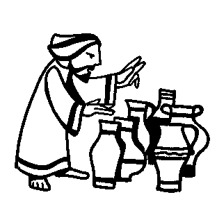

Read
the lessons at the Vanderbilt Library website:
http://divinity.lib.vanderbilt.edu/lectionary/cEpiphany/cEpiphany2.htm
Sermon Summary
|
Listen to the lessons for the following words, and tick them off when you hear them: |
___ "Forsaken" |
|
Is today's Sermon based on one of the Lessons? |
Yes / No |
|
Circle the Lesson that the Sermon is based on. |
Isaiah
62:1-5 None of the Above |
|
What is the main point of the Sermon? |
_______________________________ |
|
Write down one Scripture reference that the preacher makes |
_______________________________ |
|
Write down one figure of speech used by the preacher (Metaphors, Similes, hyperbole) |
_______________________________ |
|
Write down five interesting words and discuss them with an adult during coffee hour |
_______________
|

Middle-School Pew-work ...Page 2
|
1 And the third day
there was a marriage in Cana of Galilee; and the mother of Jesus
was there: |
6 And there were set
there six waterpots of stone, after the manner of the purifying
of the Jews, containing two or three firkins apiece. |
wine, and knew not whence it was: (but the
servants which drew the water knew;) the governor of the feast
called the bridegroom, |
What was your first reaction to the exchange between Jesus and his mother in the Gospel reading? Did you think he was being rude?
______________________________________________________________________________
How do you react to the fact that Jesus’ first miracle was changing water into such an incredible amount of wine? Does it surprise you? Why or why not?
______________________________________________________________________________
Did you notice the extravagant ways in which Jesus provided? How does God provide extravagantly in your life? In the lives of your family or friends? In the life of your congregation?
______________________________________________________________________________
Do you think, on the whole, that Christians respect the various gifts of the Spirit given to other Christians? Why or why not? Would it help ecumenical relations if we embraced these words of Paul? How?
______________________________________________________________________________
Do you see any other characteristics of Jesus revealed in this week’s Gospel story? What are they?
______________________________________________________________________________
H O W I N G S E E
|
(Psalms 36:7) How precious is your steadfast love, O God! All people may take refuge in the shadow of your wings. (NRSV) |
STEADFAST PRECIOUS SHADOW REFUGE PSALMS PEOPLE WINGS YOUR TAKE NRSV LOVE THE MAY HOW GOD ALL OF IS |
from www.geocities.com/lectionarypuzzles/ Free to distribute for free with this notice. Words are in a straight line in all directions. |
||